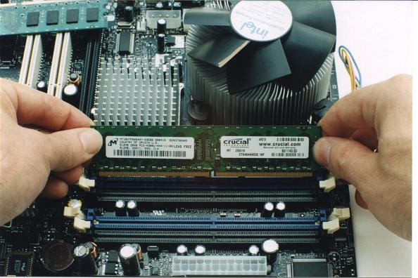

Now you will install the memory for your computer
- Touch your hand to the metal of your
computer case if you are not using an anti-static strap.
- Look in your case with the installed motherboard and
find the memory slots. There will often be anywhere from 2-6 slots.
- Push back the wings (small tabs on each side of the memory
slot).
- Firmly insert the memory into the slots provided. You
will have to line up the notches correctly for this to work. This
means you can only insert it one way.
- Sometimes you will have to apply pressure to one side
of the RAM at a time to get it into the slot. Then push on the other
side until it fits snugly.
- Push back the wings so that they click in place.